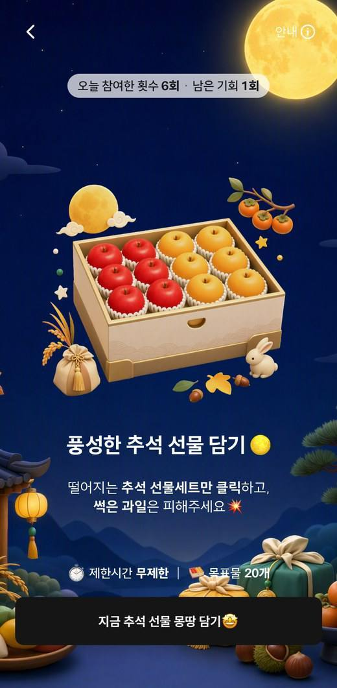

흐름을 잇는 개발
웹·네이티브·서버 사이의 인증과 상태를 연결하고, 서비스 간 사용자 경험을 일관되게 설계합니다.
고객이 쓰는 앱부터 현업이 쓰는 어드민까지.
React · iOS · Spring으로 화면, API, 운영을 연결하는
개발자 김현서입니다.
통합 계정 전환 대상 회원
캠페인 제작 리드타임
앱 신규 가입자 중 더현대 Hi 동시가입
웹 · 모바일 · 서버 · 운영 경험
화면의 문제를 화면 안에만 두지 않습니다. 인증 상태와 API 응답, 데이터 정합성, 배포 환경까지 확인하며 실제 서비스가 이어지는 흐름을 만듭니다.
웹·네이티브·서버 사이의 인증과 상태를 연결하고, 서비스 간 사용자 경험을 일관되게 설계합니다.
공통 브릿지, 인증·통신 모듈, 개발 규칙을 정리해 팀이 같은 기반에서 기능을 확장하도록 합니다.
연동 실패, 중복 지급, 권한과 상태 불일치를 고려하고 이력과 알림으로 후속 대응을 지원합니다.
현대백화점 웹·앱 개발 및 운영
주요 프로젝트 타임라인
PLAYLOOP 운영 배포 · React 공용 WebView 프레임워크 · 더현대 Hi 동시가입 · 콘텐츠 검수·승인 고도화 · 푸시 발송 대상 관리
H.Point 단일 계정 전환 · H-Apps React Native 클라이언트 리딩 · 더현대 Hi 리뉴얼 대응개발
MMP 외부 연계 · 자동화 마케팅 배치 서버 리뉴얼 · AppsFlyer·딥링크 연계 · Kafka 이벤트 처리 · AI 및 운영 자동화
UX/UI 리뉴얼 · 회원 관리 고도화 · 검색 인덱스·쿼리 개선 · VOC EAI 연계 · Bitbucket·Bamboo 자동 빌드·배포 전환
고객 경험 · 개발 기반 · 업무 자동화
직접 참여한 주요 프로젝트
AI 기반 참여형 게임 캠페인 플랫폼
반복되는 게임 규칙을 플러그인 모듈로 만들고, 캠페인별 소재와 설정을 분리했습니다. 현업이 어드민에서 AI 소재 생성부터 미리보기·게시까지 진행하도록 제작 흐름을 연결했습니다.

React 제작 어드민·Spring API·AI 이미지 생성 연계. 기본·게임·리워드·광고·공유·노출의 6단계 제작 과정과 기존 앱의 참여·리워드 기능을 연결했습니다.
기획 착수 후 3개월 만에 운영 배포. 브랜드 프롬프트 튜닝과 배경 제거·경계 보정으로 소재를 최적화하고, 사내 스타트업데이 우수상을 수상했습니다.
통합 계정 전환 · 더현대 Hi 연동
약 200만 회원 대상 H.Point 단일 계정 전환에 참여하고, 더현대 Hi 동시가입을 구현했습니다. 약 400억 규모 더현대 Hi 리뉴얼 프로젝트의 현대백화점 앱 대응개발에 참여해 예약·웨이팅, SSO, 결제, 채팅, 비대면 반품 기능의 연동과 정합성을 확보했습니다.
인증·약관 API, 동의 이력과 버전 관리, SwiftUI 약관 바텀시트와 UIKit 가입 흐름 연결. 신규 가입·약관 변경·가입 완료 상태를 구분했습니다.
Redis 회원 상태 캐싱과 가입 성공 시 갱신을 구현했습니다. 외부 조회가 무응답이면 기존 캐시를 유지해 일시적 실패로 잘못된 상태가 반영되는 일을 방지했습니다.
MMP 외부 연계 · 마케팅 배치 서버 리뉴얼
Deferred Deep Link와 AppsFlyer PostBack을 연동해 광고 유입부터 리워드 지급까지 자동화했습니다. Kafka 기반 실시간 처리와 실패 재처리·Failover를 적용하고, AI 타게팅과 현업의 캠페인 실행 흐름을 연결했습니다.
OpenAI API 연동 어댑터를 통해 행사 키워드·페르소나·알림 문안을 생성하고 담당자가 검토해 적용하도록 구현했습니다. Redis 캐싱으로 반복 계산과 API 호출을 줄였습니다.
Teams 봇과 Bamboo·Azure AI 코드 리뷰 파이프라인 구축. 중복 지급·취소·재발송 예외를 반영하고 운영 어드민에서 실행과 이력을 확인하도록 구성했습니다.
인증·브릿지·라우팅·토큰 만료 처리를 공통화했습니다. JSP와 React가 공존하는 배포 구조와 환경별 설정 기준을 마련했습니다.
클라이언트 개발을 리딩하며 화면·업무·데이터 계층을 분리하고, 공통 인증·통신 모듈과 API Adapter, 협업 기준을 정립했습니다.
AI 사전 검수와 단계별 승인, 서버 권한 검증, 반려 후 재검수, 처리 이력과 Teams 알림을 하나의 운영 절차로 연결했습니다.
고객·기기별 OS 권한, 마케팅 동의, 토큰·접속 정보를 API와 데이터 구조에 반영하고 실제 수신 조건에 맞게 발송 대상 SQL을 정비했습니다.
React · TypeScript · React Native
SwiftUI · UIKit · WebView · Vite
Java · Spring · Spring Boot
Oracle · Redis · Kafka · Spring Batch
OpenAI API · Azure AI · OpenCV
AppsFlyer · Bitbucket · Bamboo · Teams
고객 경험과 업무 효율을 함께 높이는 서비스를 만듭니다.
김현서 · Frontend & Full-stack Developer